1 Defining Correspondence
- To morph from Anne to Adams, we start by defining pairs of corresponding points by hand.
- I used given tools to create this correspondence, which is saved as point coordinates in a json file.
- In order to get the Delauney triangulation, I calculate the average point with
average_points = (im1_points + im2_points) / 2 - Below is a display of the triangulation results on the two faces.
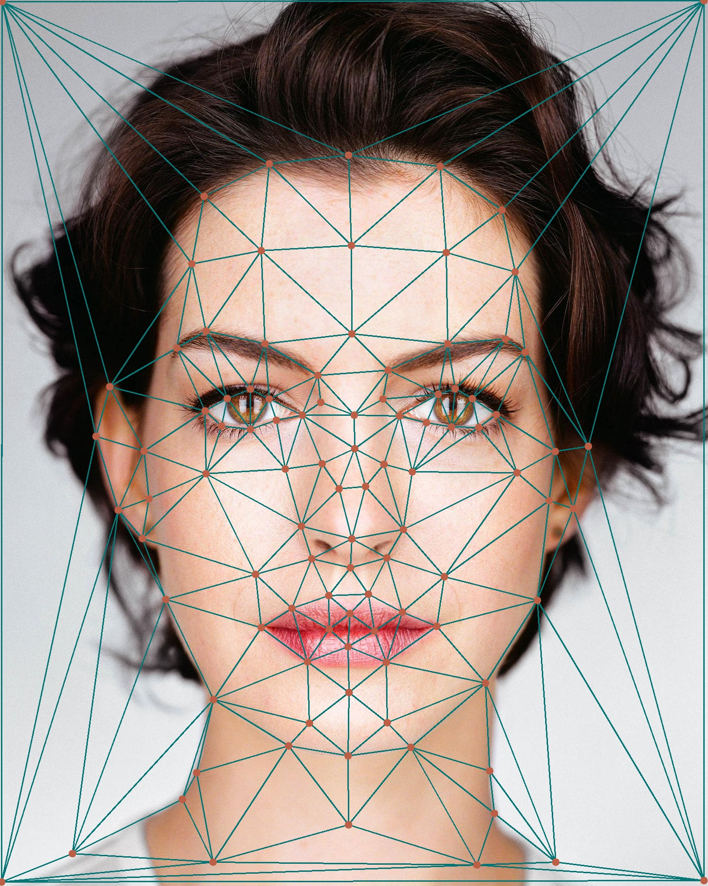
Anne with Delauney Triangulation
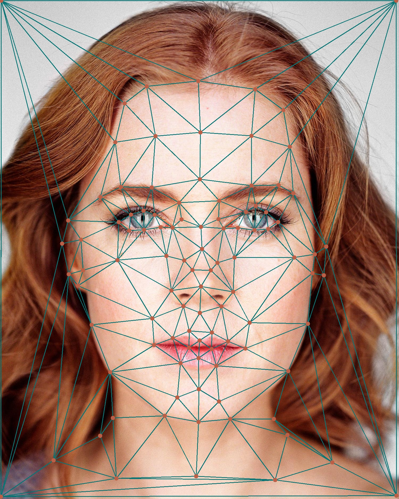
Adams with Delauney Triangulation
2 Computing the Mid-way Face
- Mid-way Face Calculation
- This the pre-step before computing the full morph sequence: we compute the mid-way face of images A and B.
- Compute the average shape by averaging each keypoint location of faces A and B.
- Warp both faces into the average shape.
- Average the colors of both images.
- Affine Warp Implementation
- Implement an affine warp for each triangle in the triangulation.
- Compute an affine transformation matrix between two triangles with this:
A = computeAffine(tri1_pts,tri2_pts) - Use a set of these transformation matrices to implement an inverse warp for all pixels.
- Generate a mask using polygons e.g.,
polygonin Python. - Loop over triangles, not pixels.
- And...here is the result! Please just ignore the hair style issue, that's not an issue at all, in some sense~
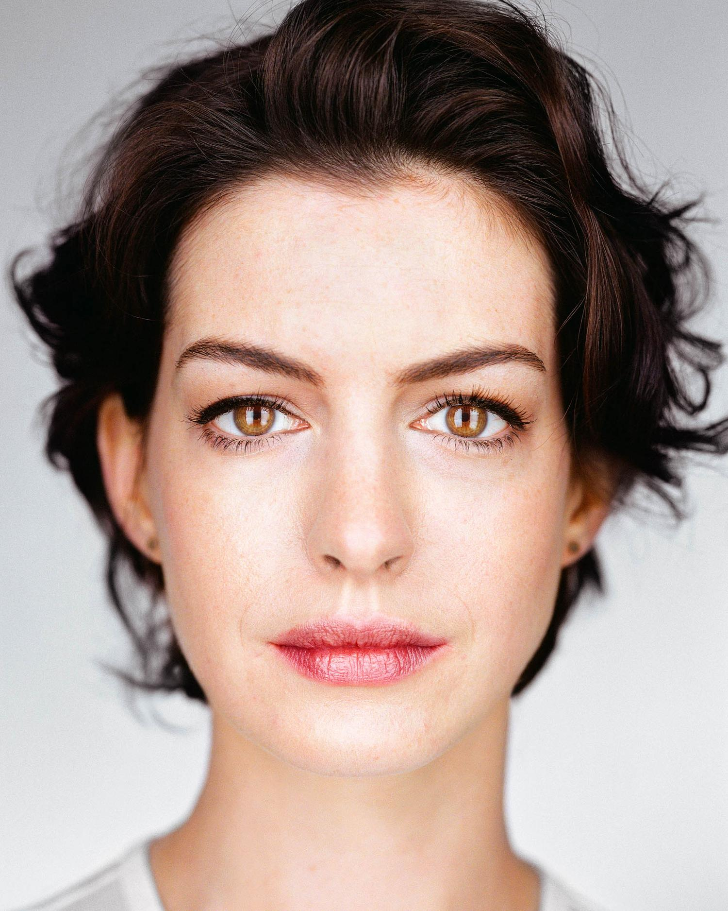
Anne Original
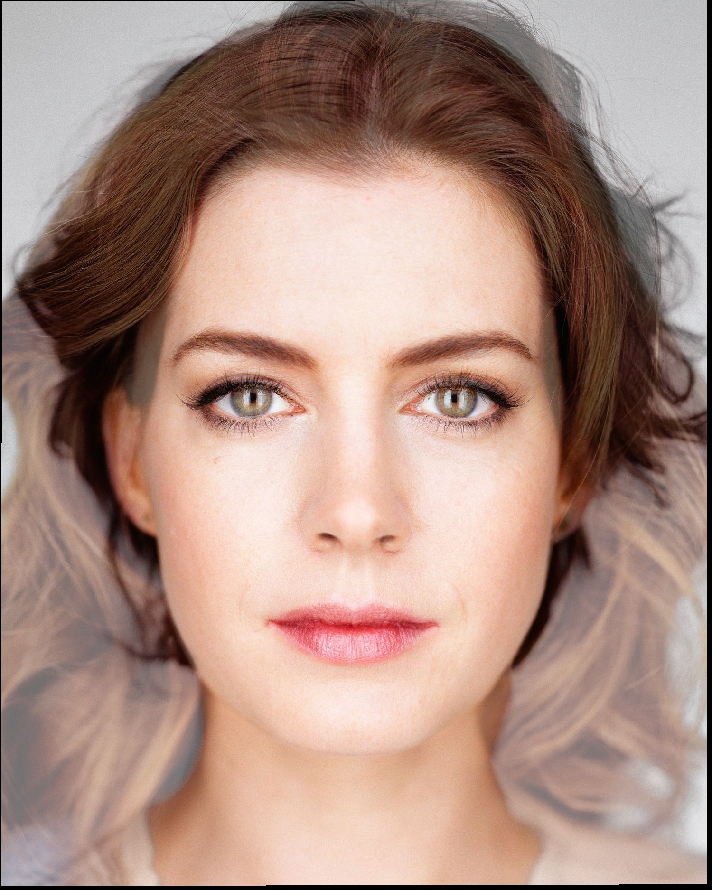
Anne-Adams Mid-way Face
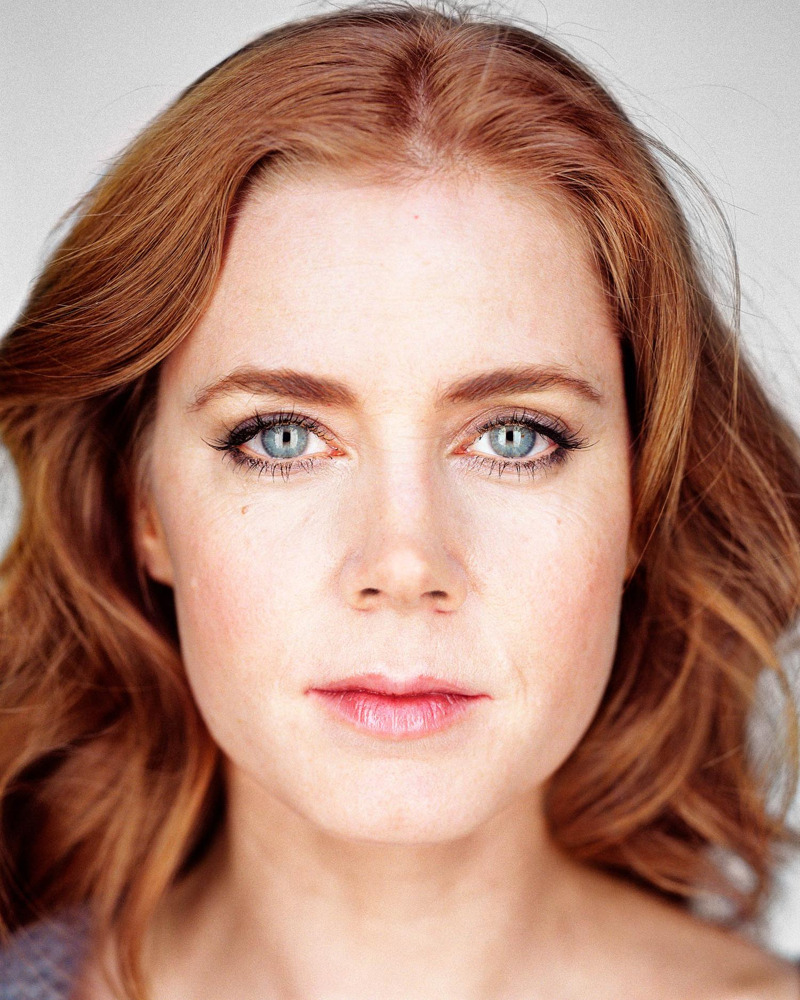
Adams Original
3 Morph Sequence!
- Just write a function to produce the morph for each frame:
morphed_im = morph(im1, im2, im1_pts, im2_pts, tri, warp_frac, dissolve_frac)- In total, I created 45 frames here, and each frame stops for 35 ms to create this GIF.

From Anne to Adams
4 Mean Face of Population
- Dataset Selection
- I choose to use FEI Face Database
- In which, I choose
frontalimages_spatiallynormalized_part1andfrontalshapes_manuallyannotated_46points. - This dataset contains 50 men and 50 women's front normalized faces. For each numbered participant, a is a neutral expression face and b is a smiling face.
- Each face is annotated with 46 points following a specific order. See the image on the right for the sequence, which will be used for morphing from other faces into this dataset's faces.
- One thing to notice is that their annotations don't include the four points of the image, which would cause issue since I'm using mush that only calculate images within polygons!
- Before I manually added 4 annotated points to the image, the morphing image will only contain a polygon-shaped face, and black all around.
- Below are the typical images like in the dataset with my added points.
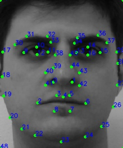
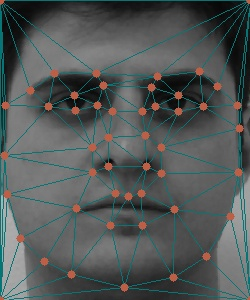
1a participant with triangulation
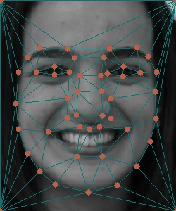
51b participant with triangulation
- Average Face
- After deviding the dataset into two types: neutral face and smiling face.
- Below is the result of average neutral, and average smiling face of this population.
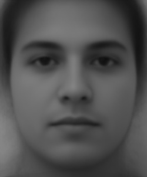
Average Neutral Face
Average Smiling Face
- Morph the first few examples into neutral faces and smiling faces geometry respectively.

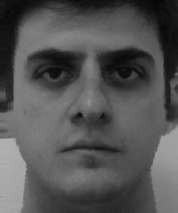
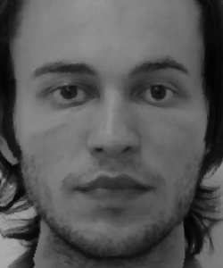
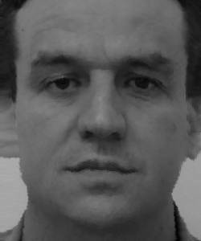
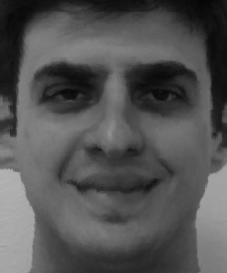
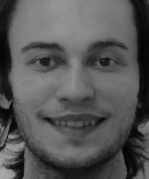
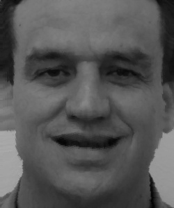